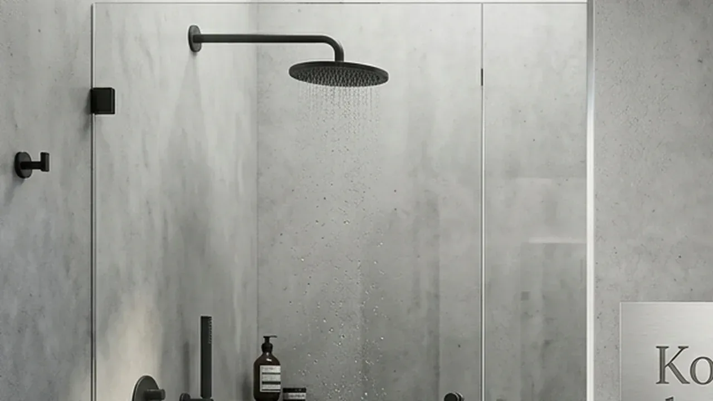

Bagaimana Cara Bandingkan Renovasi Kamar Mandi Model Shower vs Bathtub Secara Teknis?
Metode untuk membandingkan renovasi kamar mandi model shower vs bathtub berfokus pada luas area lantai, kapasitas beban struktur, serta efisiensi konsumsi air harian.
Secara spesifik, proyek renovasi yang menyasar area terbatas sangat bergantung pada pengukuran teknis yang akurat. Instalasi shower umumnya hanya membutuhkan area tapak (footprint) minimal 0,9 × 0,9 meter, menjadikannya pilihan paling rasional untuk efisiensi tata letak. Sebaliknya, unit bathtub standar berukuran panjang 1,5 hingga 1,8 meter dengan lebar 0,7 hingga 0,8 meter, yang berarti memakan porsi ruang hampir tiga kali lipat lebih besar. Dari sudut pandang utilitas air, penggunaan rain shower rata-rata menghabiskan 35 hingga 50 liter air per sesi mandi, sementara pengisian satu unit bathtub penuh membutuhkan sekitar 150 hingga 250 liter air bersih.
Selain dimensi ruang dan konsumsi air, aspek teknis yang sering kali terabaikan adalah kalkulasi beban mati (dead load) serta beban hidup (live load) pada pelat lantai. Sebuah bathtub berbahan cast iron atau akrilik tebal yang terisi penuh air beserta penggunanya dapat mencapai berat total lebih dari 350–500 kg. Hal ini memerlukan audit struktur lantai beton, khususnya untuk bangunan komersial atau hunian berlantai banyak, guna memitigasi risiko lendutan maupun retak rambut.
Berdasarkan Survei Efisiensi Fasilitas Bangunan Indonesia 2025 yang dirilis oleh Asosiasi Pengelola Pusat Belanja dan Gedung Perkantoran (APPBI), sebanyak 78% proyek modernisasi toilet komersial beralih sepenuhnya ke sistem walk-in shower guna memangkas biaya pemeliharaan berkala hingga 32%. Namun, bagi properti hospitality atau executive suite, keberadaan bathtub tetap menjadi standar wajib penentu kualifikasi kelas bangunan. Mengonsultasikan kebutuhan ini bersama vendor berpengalaman seperti Kontraktor Bangunan memastikan bahwa pilihan sanitary Anda selaras dengan kapabilitas struktur gedung.
- Footprint Area: Shower (0,81 m²) vs Bathtub (1,2–1,5 m²).
- Konsumsi Air: Shower menghemat hingga 60%–75% volume air dibanding berendam di bathtub.
- Beban Lantai: Bathtub terisi air mencapai 350–500 kg, membutuhkan verifikasi ketebalan dak beton dan tulangan besi.
Mengapa Desain Kamar Mandi Kecil Lebih Cocok Menggunakan Model Shower?
Konfigurasi desain kamar mandi kecil lebih ideal dipadukan dengan model shower karena mengoptimalkan sirkulasi gerak serta mencegah kesan sempit pada interior.
Ketika dihadapkan pada keterbatasan lahan, prinsip utama perencanaan arsitektural adalah pemanfaatan ruang secara vertikal dan optimalisasi area transparan. Sistem shower dengan partisi kaca tempered tanpa bingkai (frameless glass enclosure) menciptakan kontinuitas visual yang membuat ruang terasa lebih luas secara psikologis. Penerapan konsep barrier-free atau curbless shower—di mana lantai shower sejajar dengan lantai utama kamar mandi—juga meningkatkan keamanan serta aksesibilitas bagi seluruh pengguna tanpa mengurangi fungsi drainase air.
Aplikasi shower juga mempermudah penataan zoning area basah (wet area) dan area kering (dry area). Dengan penempatan floor drain bersistem anti-odor serta kemiringan lantai (sloping) sekitar 1–2%, aliran air dapat langsung terarah menuju saluran pembuangan tanpa menggenangi area kloset atau wastafel. Hal ini sangat efektif menekan tingkat kelembapan relatif (RH) di dalam ruangan, yang pada gilirannya mencegah pertumbuhan jamur (mold) dan bakteri pada nat keramik.
Bagi tim operasional yang menginginkan penyelesaian cepat tanpa gangguan struktur yang masif, pengerjaan unit shower jauh lebih fleksibel. Anda tidak perlu membongkar seluruh lapisan keramik lantai jika hanya melakukan penggantian armature atau penambahan shower screen. Apabila Anda membutuhkan rekomendasi tata letak yang presisi untuk area operasional bisnis atau hunian Anda, manfaatkan kesempatan untuk Booking Survei Renovasi Gratis dari Kontraktor Bangunan guna mendapatkan pengukuran lokasi langsung oleh tim teknis kami.

Detail instalasi shower kaca tempered modern berkonsep minimalis dengan fitting stainless steel dan perpipaan tersembunyi berstandar presisi.
Berapa Estimasi Biaya Renovasi Kamar Mandi Minimalis Berdasarkan Spesifikasinya?
Perhitungan biaya renovasi kamar mandi minimalis sangat dipengaruhi oleh kelas material sanitary, kerumitan instalasi perpipaan, serta kualitas lapisan waterproofing yang digunakan.
Perancangan anggaran yang transparan membutuhkan pembagian kategori material dan jasa pengerjaan secara mendalam. Biaya pekerjaan tidak hanya mencakup pembelian unit sanitary ware seperti shower set atau bathtub, tetapi juga komponen invisible seperti pipa PVC/PEX kelas berat, katup pencampur (mixing valve), semen instan, pelapis tahan air (waterproofing membrane), hingga sistem pencahayaan dan ventilasi exhaust.
Berikut adalah gambaran komparasi spesifikasi teknis dan estimasi biaya operasional renovasi:
| Parameter Evaluasi | Model Shower Minimalis | Model Bathtub Standar |
|---|---|---|
| Kebutuhan Luas Area | Min. 0.9 m × 0.9 m (Sangat Efisien) | Min. 1.5 m × 2.0 m (Membutuhkan Ruang Luas) |
| Beban Total Terisi Air | ± 80 - 120 kg (Rendah - Sedang) | ± 350 - 500 kg (Sangat Tinggi / Perlu Evaluasi Struktur) |
| Rata-Rata Biaya Instalasi | Ekonomis hingga Menengah | Menengah hingga Tinggi (Termasuk Pemasangan Decking) |
| Estimasi Waktu Pengerjaan | 4 - 7 Hari Kerja | 8 - 14 Hari Kerja |
| Konsumsi Air Per Gunakan | 35 - 50 Liter | 150 - 250 Liter |
| Tingkat Kerumitan Piping | Standard Hot/Cold Line | High Flow Rate Line + Dedicated Drain Line |
| Kemudahan Pemeliharaan | Sangat Mudah & Praktis | Perlu Perawatan Berkala Produk Anti-Kerak |
Memilih antara kedua opsi di atas harus disesuaikan dengan ROI (Return on Investment) properti Anda. Proyek komersial skala besar umumnya memprioritaskan biaya renovasi kamar mandi minimalis berbasis shower untuk mempercepat payback period investasi sewa gedung. Sebaliknya, villa atau hunian mewah menganggap biaya tambahan untuk bathtub sebagai investasi nilai tambah daya tarik pasar.
Laporan Indeks Konstruksi dan Material Rekondisi 2026 menunjukkan bahwa penggunaan material pelapis berbasis sementisius fleksibel (two-component cementitious waterproofing) dalam renovasi fasilitas air terbukti mengurangi risiko kebocoran hingga 94% dalam jangka waktu 5 tahun. Penggunaan material berkualitas yang dipasang oleh tenaga ahli dari Kontraktor Bangunan akan menghindarkan Anda dari pembengkakan biaya maintenance yang tidak terduga di masa depan.
Apa Saja Faktor Risiko yang Harus Diantisipasi Saat Memasang Bathtub?
Faktor risiko utama saat memasang bathtub meliputi potensi kebocoran akibat pergeseran jalur pipa, penurunan kekuatan lantai, serta kesulitan proses distribusi logistik material.
Proses integrasi bathtub pada struktur gedung existing menuntut ketelitian tingkat tinggi pada detail sambungan drainage. Sambungan antara afur bathtub dan saluran pembuangan utama harus kedap air dan dipasang dengan sudut kemiringan yang tepat agar tidak terjadi pengendapan air kotor. Pengendapan air di bawah cetakan bathtub yang tertutup keramik (built-in bathtub) sangat berbahaya karena dapat memicu kebocoran tersembunyi (hidden leak) yang merusak plafon lantai di bawahnya.
Selain masalah perpipaan, aspek distribusi material fisik menuju area pemasangan sering kali menjadi kendala operasional. Unit bathtub berdimensi besar memerlukan jalur akses (access route) yang memadai, baik melalui tangga darurat, freight elevator, maupun pembuatan pembukaan sementara pada dinding. Kebutuhan penanganan logistik khusus ini menuntut perencanaan alur pengerjaan yang matang agar tidak mengganggu aktivitas operasional gedung yang sedang berjalan.
Oleh karena itu, keterlibatan kontraktor profesional sangat krusial sejak tahap perencanaan awal. Kontraktor Bangunan menerapkan SOP pengecekan tekanan air (pressure test) pada jalur pipa serta flooding test selama 2 × 24 jam pada lapisan waterproofing sebelum unit bathtub ditutup secara permanen. Pendekatan ini merupakan jaminan mutu demi melindungi investasi properti Anda dari kegagalan fungsi di kemudian hari.
Bagaimana Mengoptimalkan Hasil Renovasi Bersama Kontraktor Bangunan?
Mengoptimalkan hasil renovasi bersama Kontraktor bangunan dilakukan melalui koordinasi desain interaktif, pemilihan spesifikasi material teruji, dan penerapan garansi pengerjaan terstruktur.
Sebagai penyedia jasa konstruksi dan renovasi tepercaya, Kontraktor Bangunan tidak hanya mengeksekusi pemasangan material, tetapi juga memberikan analisis nilai tambah (Value Engineering). Kami membantu Anda memilah mana fitur sanitary yang benar-benar memberikan manfaat efisiensi jangka panjang dan mana komponen yang dapat diefisienkan tanpa menurunkan standar kualitas bangunan.
Melalui pendekatan berbasis kebutuhan klien, kami menyusun tahapan kerja transparan mulai dari pembuatan As-Built Drawing, penyusunan Rencana Anggaran Biaya (RAB) terinci, hingga pelaksanaan uji coba fungsi sistem (Commissioning Test). Semua tahapan ini dirancang untuk memastikan proyek berjalan tepat waktu, sesuai anggaran, dan memenuhi standar estetika serta keamanan bangunan komersial maupun residensial.
Jangan biarkan proyek renovasi Anda terkendala oleh kesalahan perencanaan teknis atau pemilihan material yang tidak tepat. Dapatkan kepastian hasil pengerjaan berkualitas dengan langsung menyerahkan kebutuhan proyek Anda kepada ahli kami. Tim spesialis kami siap datang langsung ke lokasi Anda untuk melakukan evaluasi ruang dan memberikan rekomendasi solusi terbaik. Booking Survei Renovasi Gratis sekarang juga melalui tim layanan pelanggan Kontraktor bangunan untuk memulai transformasi area fasilitas Anda.
Pertanyaan yang Sering Diajukan (FAQ)
Kesimpulan Praktis
Keputusan untuk membandingkan renovasi kamar mandi model shower vs bathtub harus didasarkan pada kalkulasi cermat antara ketersediaan lahan, tujuan penggunaan fasilitas, serta anggaran operasional jangka panjang. Model shower unggul secara absolut dalam efisiensi ruang, konsumsi air, serta kecepatan pengerjaan yang cocok untuk ruang berkonsep minimalis. Di sisi lain, pilihan bathtub memberikan pengalaman penggunaan kelas atas yang mampu menaikkan nilai kualitatif sebuah bangunan jika didukung oleh kapabilitas struktur lantai dan saluran air yang memadai.
Apapun pilihan desain dan spesifikasi sanitary yang Anda tentukan, eksekusi teknis berstandar tinggi adalah kunci utama untuk mencegah kegagalan fungsi di masa depan. Pastikan seluruh proses pembaruan fasilitas ini ditangani oleh tim ahli yang profesional, terukur, dan bergaransi. Percayakan transformasi interior Anda kepada praktisi yang tepat; lakukan Booking Survei Renovasi Gratis bersama Kontraktor Bangunan sekarang juga dan wujudkan area kamar mandi yang efisien, estetis, serta tahan lama.